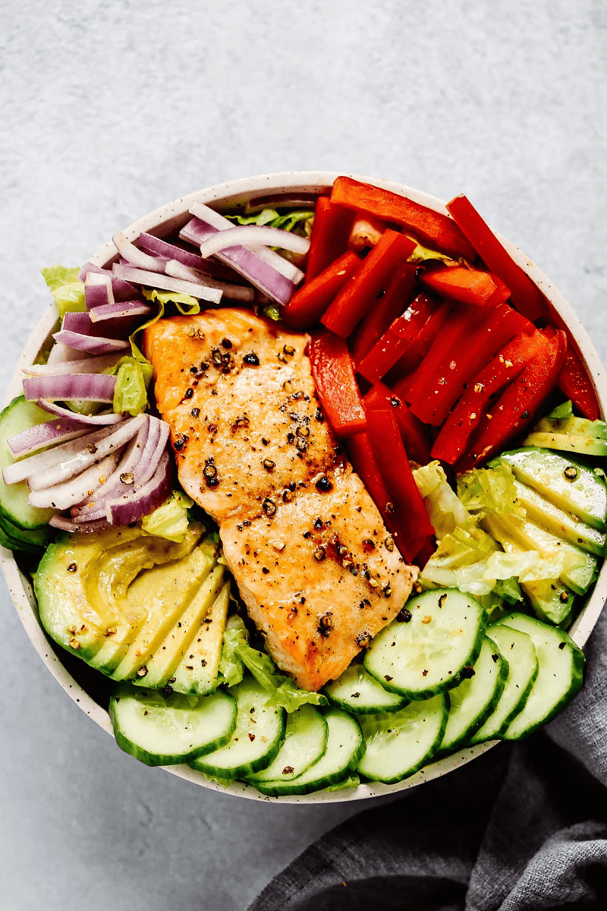

Enjoy Your Meal

Salmon Salad
Ingredients:
- Sliced cucumbers
- Salmon
- 1 avocado
- 1 red bell pepper
- ½ onions, diced
- Lemon and dijon dressing
Directions:
Step 1: make the dressing by pouring all the ingredients for the dressing in a Mason jar and shake, shake, shake!
Step 2: Season salmon and broil for 8-10 minutes.
Step 3: Add and mix all salad veggies together in a large salad bowl and top with salmon. Easy Peasy!